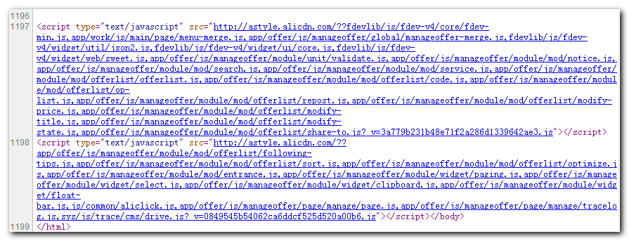
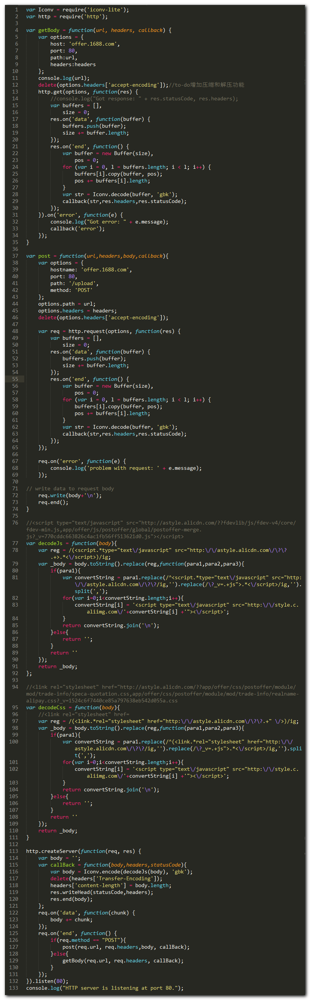

简单的node代理服务器
工作中使用到了stylecombine，服务器在返回html文件前，stylecombine会对页面内嵌的script标签进行分析，合理的分组，合并为一个javascript标签。

通常在处理线上的问题时，都是使用fiddler将请求的js文件代理到本地，修改本地文件，不需要发布就可以直接调试。
遇到上面请求链接就崩溃了。还好公司的同事开发了fdserver，一个node代理服务器，可以将js的请求拦截下来，分析出合并前的js文件，并从本地获取js文件，合并后返回给页面。
这是一个很好的方案，一点不足是，返回的js文件可能有几千行，甚至上万行。本地的文件修改了某个js文件中的第 n 行，在debug窗口中看到的可能是 m 行，不方便直接定位到修改的行数。
既然文件可以代理到本地，为什么不能从源头上将combo的js拆开？下面的node代理就这样的背景下诞生了。

结构还有点乱，后面有时间再优化，补充功能。代码可以从这里找到